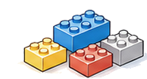

IBM BOB + PREMIUM PACKAGE FOR Z ／ STRATEGIC VALUE
銀行需要的，不只是會寫程式的 AI。
而是看得懂主機變更脈絡的能力。
THE STRATEGIC SHIFT
讓專家經驗，
擁有更完整的
分析視野。
擁有更完整的
分析視野。
系統化追查交給 Bob + PPZ；關鍵判斷、程式審閱與主機驗證，仍由銀行團隊掌握。

BOB + PREMIUM PACKAGE FOR Z
01 ／ 05
02 / POC EVIDENCE
從一張 CR、凌亂的程式碼，
到工程師可以審閱的工作成果。
聯邦銀行實際案例｜MICR 二次扣帳批次時點調整：輸入並不完美，分析仍可依照既定步驟推進。
WHAT WE RECEIVED

1,265
份交付檔案 · COBOL / Copybook / JCL / HLASM
RUNBOOK
F → M
F → M
約 1 天
現場工作經驗
非計時驗證
非計時驗證
WHAT THE TEAM CAN REVIEW
從未整理的資產，
形成有依據的工作底稿。
形成有依據的工作底稿。



同時標示依據與待確認範圍。
* 非全部建庫；實際建庫 5 支，關聯範圍約 56 支尚待核對。
一次 POC 的現場經驗 · F–J 文件初稿／K–L 依現場回報／M 尚待主機測試02 ／ 05
IBM BOB + PREMIUM PACKAGE FOR Z ／ THE NEXT CHAPTER
Change with confidence.

Build what’s next.

IBM Bob + PPZ05 ／ 05